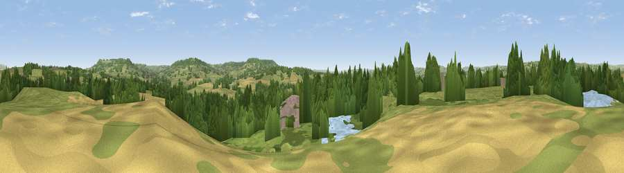

Viewpoint near Uffculme
#16678 in England · top 31% of its area beats it · near Uffculme · path 228 mWhere it is
The exact computed spot (ST 06775 13825). Click the marker for map links.
Public access: the nearest public right of way is about 228 m away — the final stretch may cross private land. Computed from Natural England's CRoW access layer and OpenStreetMap rights of way — not the legal definitive map. Always verify locally.
The view, rendered

A 360° render of this exact spot computed from the terrain model, tree cover and land cover — summer colours, afternoon light, calibrated against photographs of famous viewpoints. Real trees, hedges and buildings will differ in detail.
The panorama
Grey silhouette: terrain skyline in each direction (720 bearings, Earth curvature and refraction included). Dashed green: skyline with trees (+15 m) and buildings (+8 m) as obstacles. Blue strip: how far the ground is visible on each bearing.
Where the view opens
Wedge length = distance to the farthest visible ground on that bearing (vegetation-aware). Rings at 10, 25 and 50 km.
What fills the view
46% grassland · 32% woodland · 14% cropland · 4% water · 4% built-up
Angular shares of the visible panorama (visual magnitude), not map area. Landscape diversity 0.54 (0–1 Shannon).
Key numbers
More beautiful places nearby
The staircase of upgrades: each row has a higher view potential than everything closer. Driving times are estimates from straight-line distance, calibrated against real road routing — check an actual route before setting out.
| Place | Direction | Drive | Score |
|---|---|---|---|
| Viewpoint near Burlescombe | N · 1 km | ~4 min | 56.1 |
| Viewpoint near Culmstock | ESE · 4 km | ~10 min | 66.5 |
| Viewpoint near Blackborough | SSE · 5 km | ~11 min | 71.9 |
| Viewpoint near Sampford Arundel | ENE · 6 km | ~13 min | 72.3 |
| Viewpoint near Saint Hill | SSE · 7 km | ~15 min | 73.9 |
| Wellington Hill | ENE · 8 km | ~16 min | 74.9 |
| Hembury | SSE · 12 km | ~22 min | 75.9 |
| Viewpoint near Bradninch | SW · 13 km | ~24 min | 77.7 |
50.91633, -3.32754 · source: screening · position refined by local search. Computed location — check access rights before visiting.